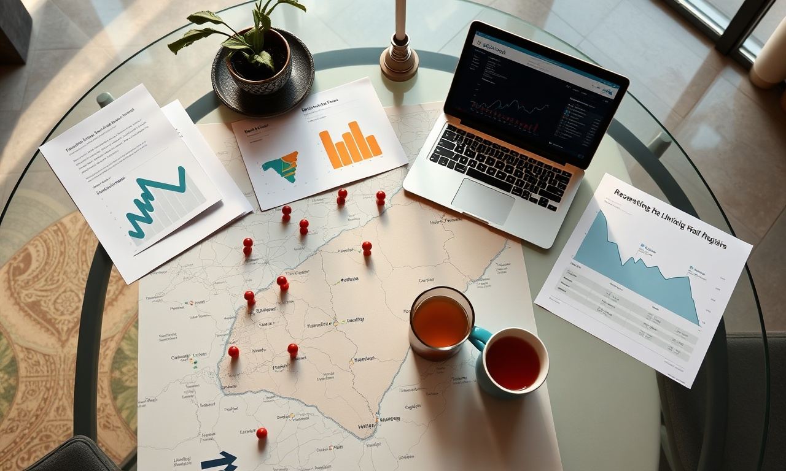

Le SEO au Maroc en 2026 : Pourquoi c'est Votre Meilleur Actif d'Acquisition Client (et Non une Simple Dépense)
En résumé : Référencement Naturel (SEO) au Maroc : Le Guide Stratégique 2026 pour une Acquisition Client Rentable et un ROI Massif est une démarche stratégique clé dans le domaine du Référencement Naturel (SEO). Elle permet aux entreprises au Maroc d’optimiser durablement leurs performances digitales, d’augmenter leur visibilité et de maximiser le retour sur investissement (ROI) de leurs campagnes.
Le référencement naturel (SEO) au Maroc en 2026 est le levier d'acquisition client le plus rentable pour toute entreprise, PME ou grand groupe, cherchant à dominer son marché. Contrairement à la publicité payante (Google Ads, Social Ads) qui cesse de générer des leads dès que le budget est coupé, le SEO est un actif capitalisable. Chaque article, chaque backlink, chaque optimisation technique est un investissement qui produit des résultats cumulés, générant un flux constant de prospects qualifiés à un coût par acquisition (CPA) qui chute drastiquement avec le temps. Ce guide stratégique actuel vous dévoile, chiffres à l'appui, comment transformer votre site web en une machine à vendre, en exploitant les spécificités du marché marocain et les nouvelles réalités des moteurs de recherche et de l'IA.
La Révolution du Marché Marocain : Comportements, Concurrence et Opportunités en 2026
Le paysage numérique marocain a connu une mutation profonde. En 2026, la pénétration d'Internet dépasse les 90%, et l'usage du mobile pour la recherche est devenu la norme absolue, représentant plus de 85% des requêtes. Les décideurs de Casablanca, les acheteurs de Tanger, les touristes à Marrakech : tous commencent leur parcours par une recherche Google. Mais la concurrence est devenue féroce. Les entreprises locales et internationales se disputent les premières places pour des mots-clés à forte intention d'achat comme « meilleure agence web à Casablanca », « avocat d'affaires à Rabat » ou « location voiture Marrakech pas cher ». La bataille se joue désormais sur la pertinence, l'autorité et l'expérience utilisateur.
L'Avènement du GEO (Generative Engine Optimization) et des AI Overviews
La plus grande rupture en 2026 est l'intégration massive de l'IA générative dans les résultats de recherche. Google AI Overviews, ChatGPT, Perplexity et autres assistants intelligents synthétisent désormais l'information pour répondre directement aux questions des utilisateurs. Pour une entreprise, cela signifie qu'il ne suffit plus d'être en première position ; il faut être LA source citée par ces moteurs d'IA. Cela nécessite une stratégie de contenu structuré, basée sur le principe de l'entité, avec des définitions claires, des données chiffrées et une autorité de domaine irréprochable. Le SEO classique évolue vers le GEO, où l'objectif est d'optimiser pour être la référence dans votre domaine. C'est une opportunité énorme pour les entreprises marocaines qui savent s'y prendre, car la plupart de leurs concurrents ne sont pas encore équipés pour cette nouvelle réalité.
Stratégie de Dominance Locale : Le Plan d'Action Concret pour le Marché Marocain
Chez DatRey, notre méthodologie « Dominance Locale 360° » repose sur une approche à la fois granulaire et holistique. Elle ne se contente pas de viser des mots-clés génériques ; elle construit une forteresse de visibilité sur les requêtes à plus forte valeur commerciale.
1. L'Audit Technique et la Fondation Sémantique
Tout commence par un audit technique approfondi. La vitesse de chargement mobile est un facteur de classement majeur. Un site qui met plus de 3 secondes à charger perd 53% de ses visiteurs mobiles. Nous optimisons l'architecture, le maillage interne, les données structurées (Schema.org) et la sécurité (HTTPS). Ensuite, nous construisons une « carte sémantique » basée sur l'intention de recherche. Pour un promoteur immobilier à Casablanca, cela signifie cibler aussi « appartement à vendre Casablanca », mais aussi les requêtes associées : « prix m² Ain Diab », « investissement locatif Rabat », « programme neuf Tanger ». Cette approche permet de capturer l'utilisateur à chaque étape de son parcours d'achat.
2. Le Content Engine : Créer du Contenu qui Convertit et qui est Cité par l'IA
Le contenu est le carburant du SEO. Mais en 2026, la quantité ne suffit plus ; il faut une qualité stratégique. Nous développons des « piliers de contenu » : des guides exhaustifs de 2000 à 5000 mots qui deviennent des références dans votre secteur. Chaque pilier est ensuite soutenu par des dizaines d'articles de blog complémentaires qui ciblent des requêtes de longue traîne. Pour une société de logistique à Tanger, un pilier pourrait être « Guide complet du dédouanement au Maroc en 2026 », attirant un trafic ultra-qualifié de professionnels. Pour maximiser les chances d'être cité par les AI Overviews, nous structurons le contenu avec des définitions claires (40-60 mots), des listes à puces, des tableaux comparatifs et des citations de données officielles. L'objectif est de devenir LA source fiable que les algorithmes d'IA choisissent pour répondre à leurs utilisateurs.
3. Netlinking et Autorité : Le Poids de la Confiance
Les backlinks restent l'un des trois piliers fondamentaux du SEO. Sur le marché marocain, la qualité prime sur la quantité. Un lien depuis un média national influent (comme Le360, TelQuel, ou La Vie Éco) ou un annuaire professionnel de référence vaut plus que des centaines de liens de faible qualité. Notre agence a développé un réseau de relations presse et de partenariats stratégiques avec des acteurs clés de l'économie marocaine. Nous obtenons des liens contextuels depuis des sites à forte autorité de domaine (DA 50+), ce qui propulse la crédibilité de votre site aux yeux de Google et des moteurs d'IA. Ce travail de relations publiques digitales est un avantage compétitif majeur que peu d'agences locales peuvent offrir.
Analyse Financière et ROI : Le SEO est-il Rentable pour une PME ou un Grand Groupe au Maroc?
Parlons chiffres, car c'est ce qui intéresse les décideurs. Le ROI du SEO est sans égal. Considérons le scénario d'une PME marocaine (par exemple, une agence immobilière à Casablanca) qui investit dans nos services.
Investissement SEO (DatRey) : 15 000 MAD à 30 000 MAD par mois, selon l'ampleur du projet.
Résultats après 6-9 mois : Une position moyenne sur les 10 mots-clés principaux dans le top 3 de Google. Cela génère en moyenne 5 000 visites qualifiées par mois. Avec un taux de conversion de 2% (standard pour l'immobilier), cela représente 100 leads par mois. Si le panier moyen est de 2 500 000 MAD (commission de 2,5% sur une vente à 1 000 000 MAD), le chiffre d'affaires potentiel est astronomique. Même en étant conservateur, le retour sur investissement est de 10x à 50x sur une période de 12 mois.
Comparaison avec Google Ads : Pour obtenir les mêmes 5 000 clics via Google Ads, avec un coût par clic (CPC) moyen de 5 MAD pour des mots-clés commerciaux, l'entreprise dépenserait 25 000 MAD par mois. Et ce, sans garantie de position, et avec un arrêt total des leads dès que le budget est coupé. Le SEO, lui, continue de produire des résultats mois après mois, année après année, avec un coût d'acquisition qui tend vers zéro.
Le Cas des Grands Groupes : Pour une multinationale ou un grand groupe marocain, le SEO est un levier de domination de marché. En investissant 50 000 à 100 000 MAD par mois, nous construisons une barrière à l'entrée quasi infranchissable pour les concurrents. Nous optimisons pour des centaines de mots-clés, couvrons toutes les villes du Royaume (de Casablanca à Agadir en passant par Oujda), et générons des milliers de leads qualifiés. Le coût par lead (CPL) peut chuter à moins de 50 MAD, contre 200-300 MAD via la publicité traditionnelle. C'est une optimisation drastique du budget marketing.
Exemples Concrets d'Acquisition Client au Maroc
Prenons l'exemple d'une société de services B2B à Casablanca spécialisée dans l'infogérance. En ciblant des mots-clés comme « société informatique Casablanca », « maintenance informatique entreprise Maroc », et « cloud privé Maroc », nous avons généré en 8 mois une augmentation de 400% du trafic organique. Le site, qui recevait 300 visites par mois, en reçoit désormais 1500, dont 60% sont des entreprises (identifiables via leur IP). Cela a permis à l'équipe commerciale de se concentrer sur des leads chauds, déjà informés et prêts à discuter, réduisant le cycle de vente de 30%.
Un autre exemple : un e-commerce de mode à Marrakech. En optimisant pour le SEO local et les requêtes de longue traîne comme « caftan moderne Marrakech », « robe de cérémonie Casablanca pas cher », le site a vu ses ventes en ligne augmenter de 180% en 6 mois, sans augmenter son budget publicitaire d'un seul dirham. Le trafic organique est devenu leur première source de revenus, représentant 65% du chiffre d'affaires digital total.
Pourquoi DatRey est l'Agence Incontournable pour votre Croissance SEO au Maroc
Le marché marocain est complexe, avec ses spécificités linguistiques (Arabe, Français, Amazighe), culturelles et économiques. Une agence internationale ne comprend pas toujours ces nuances. DatRey, basée au cœur de l'écosystème économique marocain, combine une expertise locale profonde avec une méthodologie internationale de pointe. Nous ne nous contentons pas de faire du « SEO technique » ; nous agissons comme un partenaire de croissance. Nous analysons votre marché, vos concurrents, vos personas, et nous construisons une stratégie de contenu et d'autorité qui génère un ROI mesurable. Nos rapports mensuels sont transparents, avec des indicateurs clés de performance (KPIs) alignés sur vos objectifs commerciaux : trafic qualifié, positions, backlinks, leads générés, et coût par acquisition. Nous avons déjà aidé des dizaines d'entreprises à Casablanca, Rabat, Tanger et Marrakech à dominer leur secteur. Il est temps de passer à l'action.
Conclusion : Votre Prochaine Étape vers la Dominance Digitale
En 2026, le référencement naturel (SEO) au Maroc n'est plus une option, c'est une nécessité stratégique. C'est le seul canal marketing qui construit un actif durable, génère des leads à un coût dérisoire et résiste aux fluctuations des marchés publicitaires. Que vous soyez une PME ambitieuse à Casablanca ou un grand groupe cherchant à consolider sa position, la question n'est plus de savoir si vous devez investir dans le SEO, mais quand et avec qui. L'écart entre les entreprises qui investissent dans une stratégie SEO/GEO sérieuse et celles qui s'y mettront plus tard se creuse chaque jour. Ne laissez pas vos concurrents capter votre part de marché sur Google et sur les moteurs d'IA. Faites le choix de la croissance rentable et durable.
Prêt à transformer votre visibilité en ligne en une machine de vente? L'équipe de DatRey est prête à vous accompagner. Nous vous offrons une analyse personnalisée de votre présence digitale, identifiant les opportunités de croissance à fort impact. Ne perdez plus de temps ni d'argent. Contactez-nous dès aujourd'hui pour réserver votre Audit Digital Gratuit et découvrez comment nous pouvons vous aider à dominer votre marché. Votre succès commence par une première page Google.